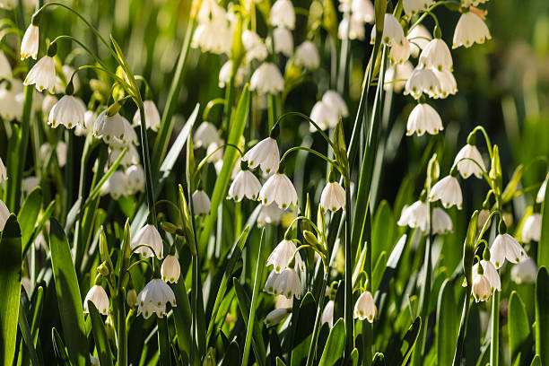
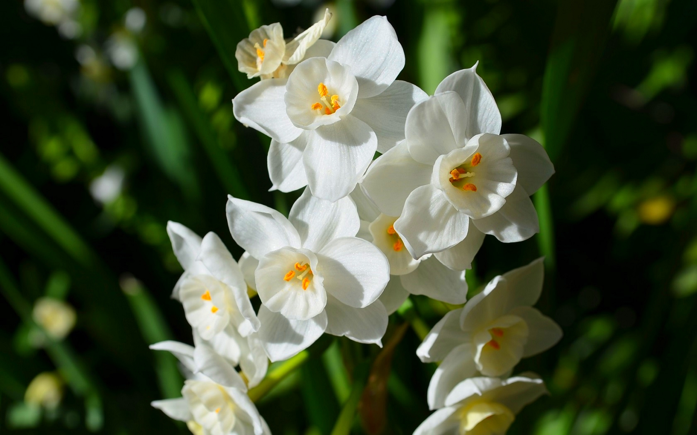
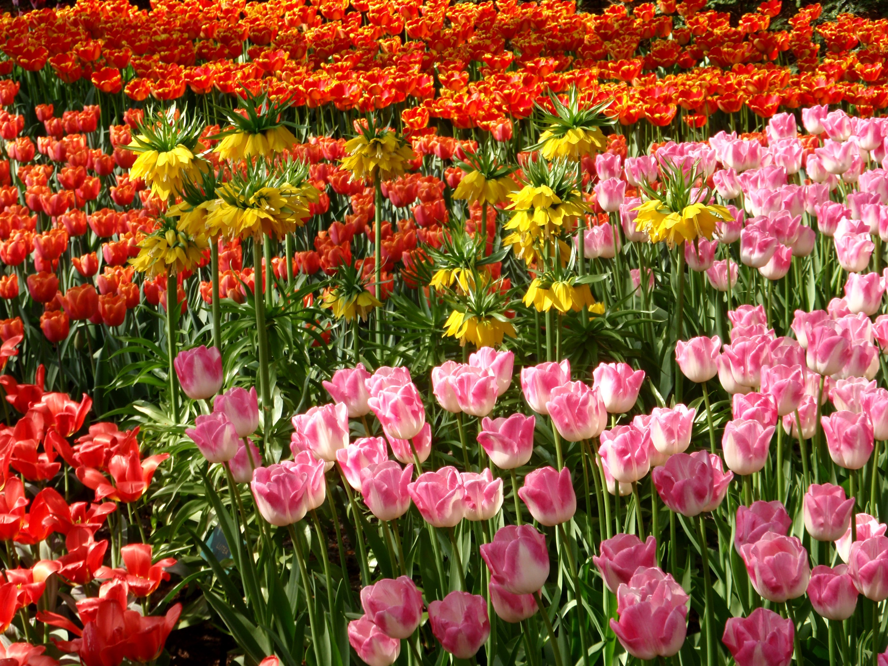

| Home | My Favorite Indoor plant | Indoor Plants | What Plant Are You Quiz |
|---|

Summer snowflakes are a delicate white flower. These flower bulbs should be planted in fall and look best with multiple bulbs planted in each hole. In the wild these flowers can be found in shady areas of damp climates around riversides.

Daffodils are a type of flower most seen in yellow but can also be white. To plant these flowers the best time is in fall, two to four weeks before the ground freezes, five to six weeks after being planted they will sprout and twelve to fifteen weeks after being planted they will bloom. These flowers can also be found in bouquets in supermarkets or flower stores in springtime.
Fun fact: The daffodil is the symbol of the Canadian Cancer Society; they also have a campaign every springtime called the daffodil campaign which is a campaign aimed towards raising money for cancer research.

Tulips are colorful flowers with most common colors being red, orange, yellow, pink, white and some mixes of colors, the best time to plant tulips is in fall, in colder climates around September medium climates around October and hotter climates in November or December. These pretty flowers can also be bought in most flower shops and supermarkets.